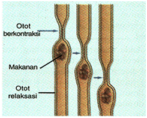
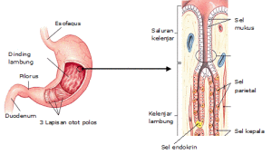
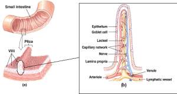
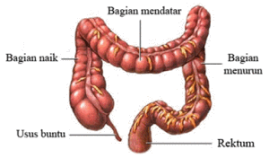
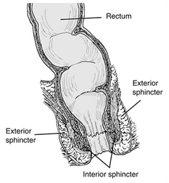
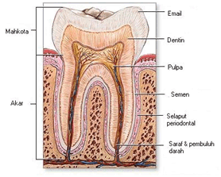
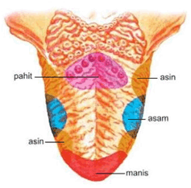
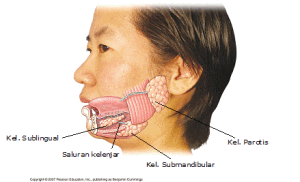
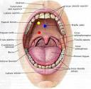

 |
| KERONGKONGAN |
Kerongkongan (esofagus) merupakan saluran penghubung antara rongga mulut dengan lambung. Kerongkongan berfungsi sebagai jalan bagi makanan yang telah dikunyah dari mulut menuju lambung. Jadi, pada kerongkongan tidak terjadi proses pencernaan. Otot kerongkongan dapat berkontraksi secara bergelombang sehingga mendorong makanan masuk ke dalam lambung. Gerakan kerongkongan ini disebut gerak peristalsis. Gerak ini terjadi karena otot yang memanjang dan melingkari dinding kerongkongan mengkerut secara bergantian. Jadi, gerak peristalsis merupakan gerakan kembang kempis kerongkongan untuk mendorong makanan masuk ke dalam lambung. Untuk lebih jelasnya, dapat dilihat pada gambar berikut. Makanan berada di dalam kerongkongan hanya sekitar enam detik. Bagian pangkal kerongkongan (faring) berotot lurik. Otot lurik pada kerongkongan bekerja secara sadar menurut kehendak kita dalam proses menelan. Artinya, kita menelan jika makanan telah dikunyah sesuai kehendak kita. Akan tetapi, sesudah proses menelan hingga sebelum mengeluarkan feses, kerja otot-otot organ pencernaan selanjutnya tidak menurut kehendak kita (tidak disadari). |
 |
| LAMBUNG |
Lambung (ventrikulus) merupakan kantung besar yang terletak di sebelah kiri rongga perut sebagai tempat terjadinya sejumlah proses pencernaan. Lambung terdiri dari tiga bagian, yaitu bagian atas (kardiak), bagian tengah yang membulat (fundus), dan bagian bawah (pilorus). Kardiak berdekatan dengan hati dan berhubungan dengan kerongkongan. Pilorus berhubungan langsung dengan usus dua belas jari. Di bagian ujung kardiak dan pilorus terdapat klep atau sfingter yang mengatur masuk dan keluarnya makanan ke dan dari lambung. Dinding lambung terdiri dari otot yang tersusun melingkar, memanjang, dan menyerong. Otot-otot tersebut menyebabkan lambung berkontraksi, sehingga makanan teraduk dengan baik dan bercampur merata dengan getah lambung. Hal ini menyebabkan makanan di dalam lambung berbentuk seperti bubur. |
 |
| USUS HALUS |
Usus halus (intestinum) merupakan tempat penyerapan sari makanan dan tempat terjadinya proses pencernaan yang paling panjang. Usus halus terdiri dari :
Di dalam usus halus terjadi proses pencernaan kimiawi dengan melibatkan berbagai enzim pencernaan. Karbohidrat dicerna menjadi glukosa. Lemak dicerna menjadi asam lemak dan gliserol, serta protein dicerna menjadi asam amino. Jadi, pada usus dua belas jari, seluruh proses pencernaan karbohidrat, lemak, dan protein diselesaikan. Selanjutnya, proses penyerapan (absorbsi) akan berlangsung di usus kosong dan sebagian besar di usus penyerap. Karbohidrat diserap dalam bentuk glukosa, lemak diserap dalam bentuk asam lemak dan gliserol, dan protein diserap dalam bentuk asam amino. Vitamin dan mineral tidak mengalami pencernaan dan dapat langsung diserap oleh usus halus. Pada dinding usus penyerap terdapat jonjot-jonjot usus yang disebut vili (Lihat gambar diatas). Vili berfungsi memperluas daerah penyerapan usus halus sehingga sari-sari makanan dapat terserap lebih banyak dan cepat. Dinding vili banyak mengandung kapiler darah dan kapiler limfe (pembuluh getah bening usus). Agar dapat mencapai darah, sari-sari makanan harus menembus sel dinding usus halus yang selanjutnya masuk pembuluh darah atau pembuluh limfe. Glukosa, asam amino, vitamin, dan mineral setelah diserap oleh usus halus, melalui kapiler darah akan dibawa oleh darah melalui pembuluh vena porta hepar ke hati. Selanjutnya, dari hati ke jantung kemudian diedarkan ke seluruh tubuh. |
 |
| USUS BESAR |
Makanan yang tidak dicerna di usus halus, misalnya selulosa, bersama dengan lendir akan menuju ke usus besar menjadi feses. Di dalam usus besar terdapat bakteri Escherichia coli. Bakteri ini membantu dalam proses pembusukan sisa makanan menjadi feses. Selain membusukkan sisa makanan, bakteri E. coli juga menghasilkan vitamin K. Vitamin K berperan penting dalam proses pembekuan darah. Sisa makanan dalam usus besar masuk banyak mengandung air. Karena tubuh memerlukan air, maka sebagian besar air diserap kembali ke usus besar. Penyerapan kembali air merupakan fungsi penting dari usus besar. Usus besar terdiri dari bagian yang naik, yaitu mulai dari usus buntu (apendiks), bagian mendatar, bagian menurun, dan berakhir pada anus. Perjalanan makanan sampai di usus besar dapat mencapai antara empat sampai lima jam. Namun, di usus besar makanan dapat disimpan sampai 24 jam. Di dalam usus besar, feses di dorong secara teratur dan lambat oleh gerakan peristalsis menuju ke rektum (poros usus). Gerakan peristalsis ini dikendalikan oleh otot polos (otot tak sadar). |
 |
| ANUS |
Merupakan lubang tempat pembuangan feses dari tubuh. Sebelum dibuang lewat anus, feses ditampung terlebih dahulu pada bagian rectum. Apabila feses sudah siap dibuang maka otot spinkter rectum mengatur pembukaan dan penutupan anus. Otot spinkter yang menyusun rektum ada 2, yaitu otot polos dan otot lurik. Jadi, proses defekasi (buang air besar) dilakukan dengan sadar, yaitu dengan adanya kontraksi otot dinding perut yang diikuti dengan mengendurnya otot sfingter anus dan kontraksi kolon serta rektum. Akibatnya feses dapat terdorong ke luar anus. |
 |
| GIGI |
Gigi berfungsi untuk mengunyah makanan sehingga makanan menjadi halus. Keadaan ini memungkinkan enzim-enzim pencernaan mencerna makanan lebih cepat dan efisien. Gigi dapat dibedakan atas empat macam yaitu gigi seri, gigi taring, gigi geraham depan, dan gigi geraham belakang. Secara umum, gigi manusia terdiri dari tiga bagian, yaitu mahkota gigi (korona), leher gigi (kolum), dan akar gigi (radiks). Mahkota gigi atau puncak gigi merupakan bagian gigi yang tampak dari luar. Setiap jenis gigi memiliki bentuk mahkota gigi yang berbeda-beda. Gigi seri berbentuk seperti pahat, gigi taring berbentuk seperti pahat runcing, dan gigi geraham berbentuk agak silindris dengan permukaan lebar dan datar berlekuk-lekuk. Bentuk mahkota gigi pada gigi seri berkaitan dengan fungsinya untuk memotong dan menggigit makanan. Gigi taring yang berbentuk seperti pahat runcing untuk merobek makanan. Sedangkan gigi geraham dengan permukaan yang lebar dan datar berlekuk-lekuk berfungsi untuk mengunyah makanan. Leher gigi merupakan bagian gigi yang terlindung dalam gusi, sedangkan akar gigi merupakan bagian gigi yang tertanam di dalam rahang. Email gigi merupakan lapisan keras berwarna putih yang menutupi mahkota gigi. Tulang gigi, tersusun atas zat dentin. Sumsum gigi (pulpa), merupakan rongga gigi yang di dalamnya terdapat serabut saraf dan pembuluh-pembuluh darah. Itulah sebabnya bila gigi kita berlubang akan terasa sakit, karena pada sumsum gigi terdapat saraf. |
 |
| LIDAH |
Lidah berfungsi untuk mengaduk makanan di dalam rongga mulut dan membantu mendorong makanan (proses penelanan). Selain itu, lidah juga berfungsi sebagai alat pengecap yang dapat merasakan manis, asin, pahit, dan asam. Tiap rasa pada zat yang masuk ke dalam rongga mulut akan direspon oleh lidah di tempat yang berbeda-beda. Letak setiap rasa berbeda-beda, yaitu:
Lidah mempunyai reseptor khusus yang berkaitan dengan rangsangan kimia. Lidah merupakan organ yang tersusun dari otot. Permukaan lidah dilapisi dengan lapisan epitelium yang banyak mengandung kelenjar lendir, dan reseptor pengecap berupa tunas pengecap. Tunas pengecap terdiri atas sekelompok sel sensori yang mempunyai tonjolan seperti rambut yang disebut papila |
 |
| KELENJAR LUDAH |
Kelenjar ludah menghasilkan ludah atau air liur (saliva). Kelenjar ludah dalam rongga mulut ada tiga pasang, yaitu :
Kelenjar parotis menghasilkan ludah yang berbentuk cair. Kelenjar submandibularis dan kelenjar sublingualis menghasilkan getah yang mengandung air dan lendir. Ludah berfungsi untuk memudahkan penelanan makanan. Jadi, ludah berfungsi untuk membasahi dan melumasi makanan sehingga mudah ditelan. Selain itu, ludah juga melindungi selaput mulut terhadap panas, dingin, asam, dan basa. Di dalam ludah terdapat enzim ptialin (amilase). Enzim ptialin berfungsi mengubah makanan dalam mulut yang mengandung zat karbohidrat (amilum) menjadi gula sederhana (maltosa). Maltosa mudah dicerna oleh organ pencernaan selanjutnya. Enzim ptialin bekerja dengan baik pada pH antara 6,8 – 7 dan suhu 37oC. |
 |
| MULUT |
Proses pencernaan dimulai sejak makanan masuk ke dalam mulut. Di dalam mulut terdapat alat-alat yang membantu dalam proses pencernaan, yaitu gigi, lidah, dan kelenjar ludah (air liur). Di dalam rongga mulut, makanan mengalami pencernaan secara mekanik dan kimiawi. Beberapa organ di dalam mulut |